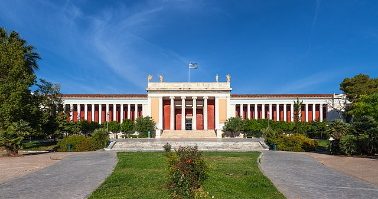
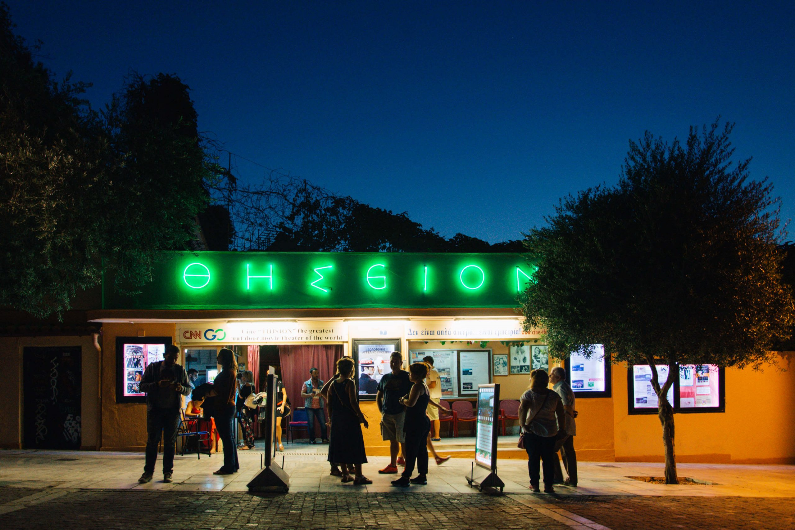

-

- Area: Akropolis
- Tip by Nikos: Do not forget to visit Parthenon (religious temple the Athenians built for the Greek goddess Athena)
- How close to Syntagma Square: 13 min 🚶🚶🚶
-

- Area: Monastiraki
- Tip by Nikos: Agora was the political and business center of Athens, bringing together citizens and foreigners, merchants and philosophers.
- How close to Syntagma Square: 12 min 🚶🚶🚶
-

- Area: Thiseio
- Tip by Nikos: It is considered the best preserved ancient temple in Greece. It remains almost intact
- How close to Syntagma Square: 16 min 🚶🚶🚶
-

- Area: Akropolis
- Tip by Nikos: Roman theatre structure located on the southwest slope of the Acropolis of Athens. Great place with great vibes
- How close to Syntagma Square: 19 min 🚶🚶🚶
-

- Area: Center (Mets)
- Tip by Nikos: The only stadium in the world built entirely of marble. It hosted the first modern Olympics in 1896.
- How close to Syntagma Square: 24 min 🚶🚶🚶 or 10 min by 🚕
-

- Area: Exarcheia | Center
- Tip by Nikos: Museum of Ancient Greek art & archaeology, with sculpture, metalwork, vases & jewelry.
- How close to Syntagma Square: 22 min 🚶🚶🚶 or 10 min by 🚕
-

- Area: Kallithea
- Tip by Nikos: Cultural hub with a national library, opera house, theater & surrounding park. One of the newest cultural attractions in Athens
- How close to Syntagma Square: 9 min by 🚗 or 22 min by 🚇
-

- Area: Thiseio
- Tip by Nikos:
One of the essential experiences while in Athens during the summer is to visit the exquisite open-air cinema in Thiseio. I highly recommend paying a visit, even if the movie is in Greek.
- How close to Syntagma Square: 20 min 🚶🚶🚶 or 2 min from the Thiseio metro station 🚇
-

- Area: Ampelokipi
- Tip by Nikos: Football stadium of the best and most historic greek team of Panathinaikos ☘️. It's old, but the vibes are still amazing!!!
- How close to Syntagma Square: 34 min 🚶🚶🚶 or 2 min from the Ampelokipi metro station 🚇